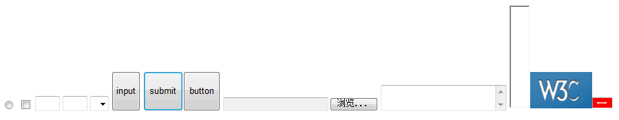
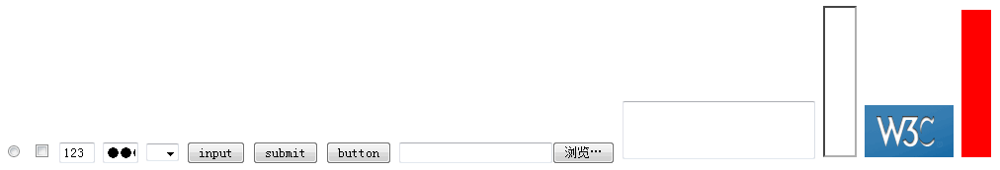
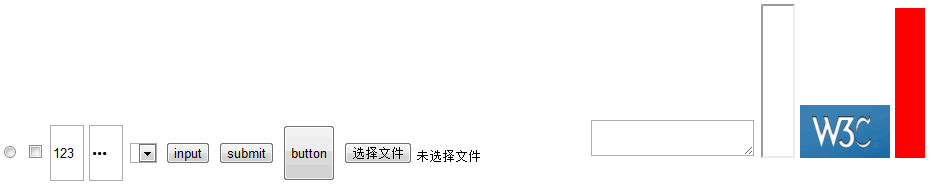

RD1012: 不同浏览器内 'line-height' 样式设置会影响不同行内替换元素的显示高度
标准参考
关于替换元素的说明，请参考 W3C CSS 2.1 规范描述：http://www.w3.org/TR/CSS21/conform.html#replaced-element
关于行内替换元素的高度计算的说明，请参考 W3C CSS 2.1 规范描述：http://www.w3.org/TR/CSS21/visudet.html#inline-replaced-height
关于行高设定的说明，请参考 W3C CSS 2.1 规范描述： http://www.w3.org/TR/CSS21/visudet.html#propdef-line-height
问题描述
不同浏览器内 'line-height' 样式设置会影响 INPUT BUTTON 元素的显示高度。
造成的影响
INPUT[type=text]、INPUT[type=password]、INPUT[type=button]、INPUT[type=file]、input[type=submit] 和 BUTTON 标记设置 'line-height' 后，在各浏览器下显示高度不一致。
受影响的浏览器
| 所有浏览器 |
|---|
问题分析
根据行内替换元素的高度计算的说明，如果 'height' 为 'auto' ，则计算值为替换元素的内在高度。
在行高部分，规范说明中提及 ”行高所指定的高度用于行框的高度计算，但需除去行内替换元素，其高度设定来自于 ‘height’ 属性设置“ 。
在这两条中均没有明确提到，如果设置行高是否会影响其内在高度的计算。
分析以下代码：
<input style="line-height:50px;" type="radio" /> <input style="line-height:50px;" type="checkbox" /> <input style="line-height:50px; width:30px; " type="text" value="123"/> <select style="line-height:50px; "></select> <input style="line-height:50px;" type="button" value="input"/> <input style="line-height:50px;" type="submit" value="submit"/> <button style="line-height:50px;">button</button> <input style="line-height:50px;" type="file" /> <textarea style="line-height:50px width:30px;"></textarea> <iframe style="line-height:50px; width:30px;" src="about:blank"></iframe> <img style="line-height:50px;" src ="logo-w3c-mobile-lg.png" /> <object style="line-height:50px; width:30px; background:red" data="about:blank"></object>
此间别将所有常见行内替换元素 INPUT、BUTTON、TEXTAREA、SELECT、IFRAME、IMG、OBJECT 的行高均设置为 50px，观察其在各浏览器中的显示效果如下表：
| IE6 IE7 IE8(Q) |
|---|
|  |
| IE8(S) |
 |
| Firefox |
|  |
| Chrome Safari |
|  |
| Opera |
 |
上表中可以直观看出各浏览器中为行内替换元素设置 'line-height' 属性后，对各元素内在高度理解存在差异。
我们将这些差异汇总成表：
| IE6 IE7 IE8 | Firefox | Opera | Chrome Safari | |
|---|---|---|---|---|
| INPUT[type="radio"] INPUT[type="checkbox"] |
内在高度不受行高影响。 | |||
| INPUT[type="text"] INPUT[type="password"] |
内在高度不受行高影响， 行高作用于元素内部导致文字不在可视区域内出现。 | 内在高度不受行高影响，行高也不作用于元素内部文字中。 | 内在高度受行高影响，元素高度被改变，同时行高也作用于元素内部文字中。 | |
| INPUT[type="button"] INPUT[type="submit"] |
内在高度受行高影响，元素高度被改变，同时行高也作用于元素内部文字中。 | 内在高度不受行高影响，行高也不作用于元素内部文字中。 | ||
| INPUT[type="file"] | 内在高度不受行高影响，行高也不作用于元素内部文字中。 | |||
| BUTTON | 内在高度受行高影响，元素高度被改变，同时行高也作用于元素内部文字中。 | 内在高度不受行高影响，行高也不作用于元素内部文字中。 | 内在高度受行高影响，元素高度被改变，同时行高也作用于元素内部文字中。 | 内在高度受行高影响，元素高度被改变，同时行高也作用于元素内部文字中。 |
| SELECT TEXTAREA IFRAME IMG OBJECT |
内在高度不受行高影响。 | |||
根据汇总表可以断定，不同浏览器中 'inline-height' 属性值设置对行内替换元素 INPUT[type=text]、INPUT[type=password]、INPUT[type=button]、INPUT[type=file]、input[type=submit] 和 BUTTON 标记的内在高度计算有影响，会导致实际显示效果不一。其他常用行内元素 INPUT[type=radio]、 INPUT[type=checkbox]、SELECT、TEXTAREA、IFRAME、IMG、OBJECT 则无此问题。
解决方案
尽量避免使用 'line-height' 为 INPUT[type=text]、INPUT[type=password]、INPUT[type=button]、INPUT[type=file]、input[type=submit] 和 BUTTON 标记设置 ‘line-height’，而应改用规范内说明的 'height' 属性。
参见
知识库
相关问题
测试环境
| 操作系统版本: | Windows 7 Ultimate build 7600 |
|---|---|
| 浏览器版本: |
IE6 IE7 IE8 Firefox 3.6 Chrome 4.0.302.3 dev Safari 4.0.4 |
| 测试页面: | inline_replaced_elements_and_line_height.html |
| 本文更新时间: | 2010-07-22 |
关键字
INPUT BUTTON height line-height 高度 行高 inline replaced elements 行内替换元素